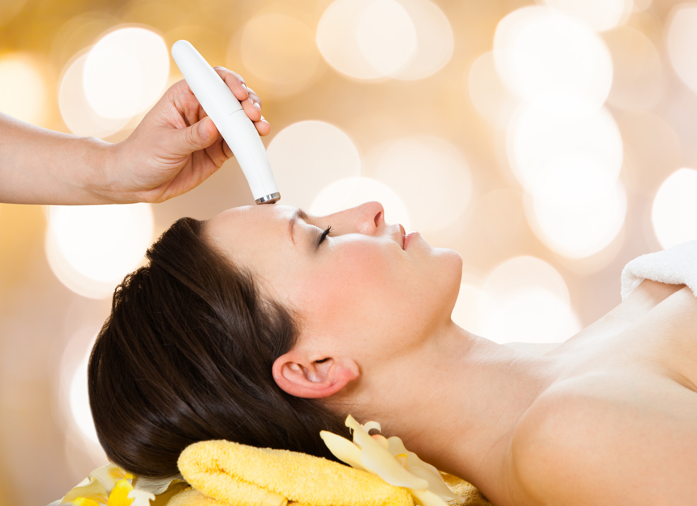

Гальванотерапия
Гальванотерапия – это воздействие на организм гальваническим током. Таким током называется постоянный непрерывный электрический ток, имеющий низкое напряжение (30–80 В) и малую силу (до 50 мА).
Польза гальванотерапии
Гальванический ток в теле человека распространяется по пути наименьшего сопротивления, то есть по выводным протокам сальных и потовых желез, по межклеточным пространствам, по лимфатическим и кровеносным сосудам. В результате этого в организме происходит ряд положительных изменений.
Гальванотерапия часто применяется в косметологии для омоложения кожи лица. Эта процедура активизирует функцию дермы, что обеспечивает хорошее проникновение специальной косметики в глубокие слои кожи. Во время процедуры под действием электрического поля положительно заряженные ионы (катионы) начинают двигаться к катоду (отрицательному электроду). Анионы (отрицательно заряженные ионы) двигаются к положительному электроду (аноду).

При этом в организме появляется ионная асимметрия, которая проявляется:
- преобладанием повышения возбудимости тканей у катода
- повышением проницаемости мембраны клеток
- активизацией кровотока
- активизацией синтеза ферментов
- улучшением тканевого дыхания в коже
Гальванотерапия улучшает процессы обмена веществ в коже
В организме происходит движение жидкости: в тканях под катодом наблюдается разрыхление и отек тканей, расширение пор. Это необходимо для лечения обезвоженной, сухой кожи и для подготовки к процедуре механической чистки. В области анода клетки уплотняются, а поры сужаются, что используется после процедур для жирной кожи.
Как проводится гальванотерапия
Чаще всего в косметологии используется ионофорез – применение гальванического тока для введения лекарственных средств под кожу. При проведении процедуры обязательно соблюдается ряд правил. Ионофорез делается специальным аппаратом только на чистой коже. Ее очистка проводится при помощи анафореза.
После этапа очистки на кожу наносят специальные средства. Затем проводится непосредственно сама процедура ионофореза. На кожу помещаются электроды или иглы, через них дозированно подается ток. На заключительном этапе кожа обрабатывается косметическими средствами, чтобы закрепить полученный результат.
Процедурой достигаются следующие результаты:
- уровень увлажненности сухой кожи повышается
- поверхность кожи выравнивается
- кожа становится более упругой
- лицо приобретает здоровый цвет
- исчезают круги под глазами
После процедуры гальванотерапии коже требуется особый уход:
- В первые сутки нельзя пользоваться декоративной косметикой.
- В течение недели нужно избегать воздействия солнечных лучей и препаратов, содержащих химические вещества.
- В течение двух недель нельзя посещать бассейн, баню или сауну.
- Для умывания следует использовать только мягкие средства и ежедневно наносить на кожу увлажняющий крем.